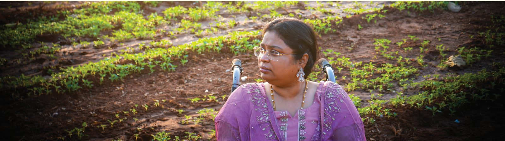

Smt. Bala Latha Mallavarapu.
A distinguished former bureaucrat and renowned educator with a career spanning over 12 years in national administration. Twice selected for the Indian Civil Services, she now dedicates her expertise to mentoring the next generation of public servants.

A career in public service.
Civil Services excellence
Cleared the Civil Services Examination twice — AIR 399 in 2005 and AIR 167 in 2017.
Administrative service
Served as a bureaucrat in the Ministry of Defence for 12 years.
Leadership
Held the position of Deputy Director in the Ministry of Defence.
Building the next generation of officers.
Established the academy in Hyderabad with the mission to produce 100 high-calibre civil servants for the nation.
Mentored over 1,00,000 students over the last decade, resulting in approximately 100 selections into the Civil Services and many more into State Civil Services.
A prolific motivational speaker who has inspired over 10 lakh youth across Andhra Pradesh and Telangana.
Contributing writer for prominent Telugu newspapers, including Andhra Jyothi, Sakshi and Namaste Telangana.
Actively engaged in social initiatives centred on education and women empowerment.
“Empowering aspirants through excellence in governance and law.”
“If you can dream it, you can do it. If I can do it, anyone can do it.”
— Balalatha Madam